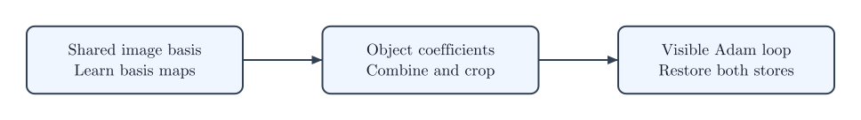
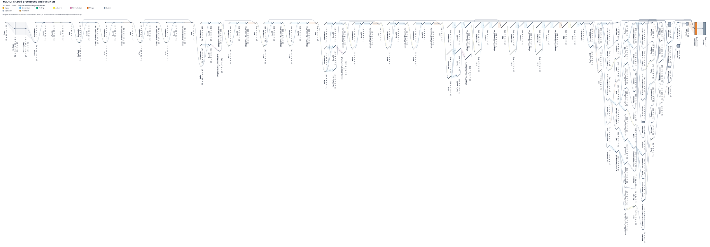
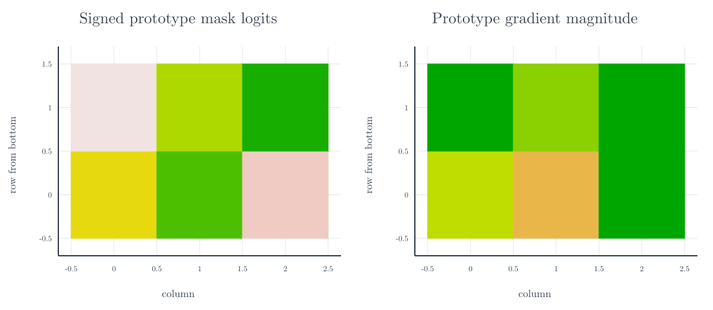
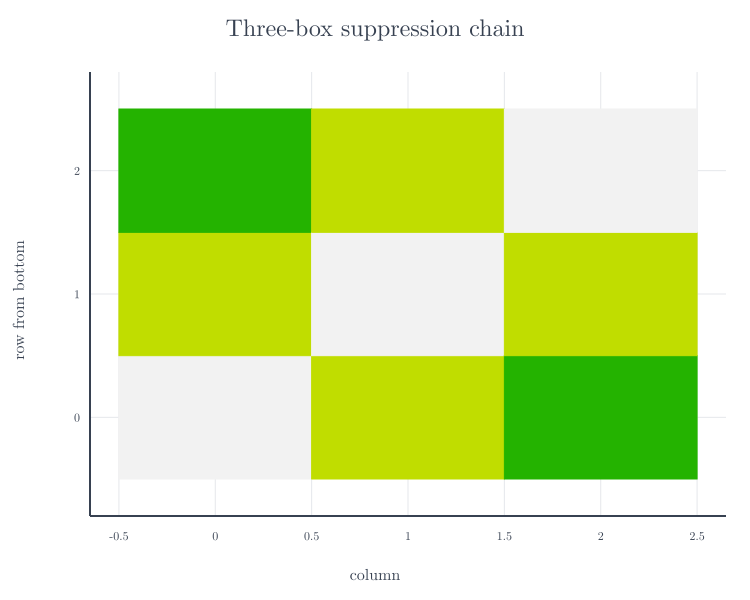
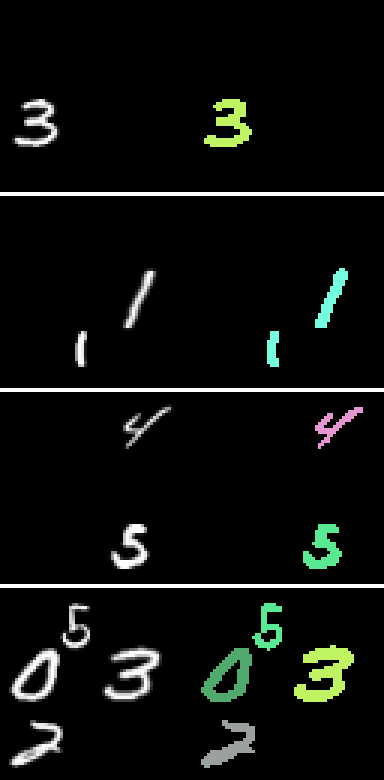
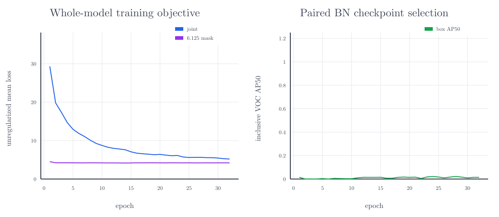
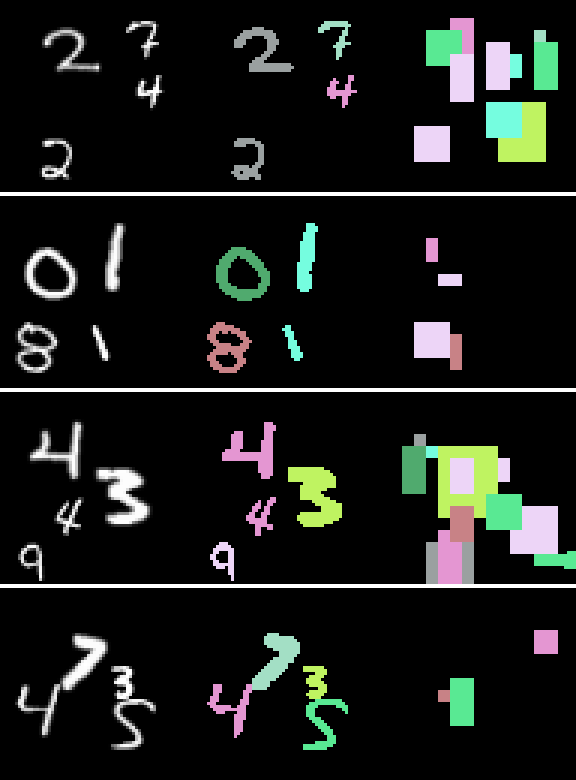
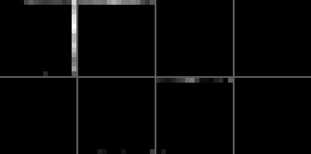

YOLACT shared prototypes and Fast NMS
Abstract
Separating objects into individual masks can be costly when each region needs its own feature crop. YOLACT predicts shared image-wide prototype maps and per-object coefficients. This report checks their tensor derivatives and Fast NMS,then visibly fits the complete compact model and inspects its actual held-out masks and learned basis.
Source example: examples/cpp/source/nn/1_convolutional_neural_networks/1.7_segmentation/yolact.cpp.
The method
Shared prototype maps combine linearly with signed per-anchor coefficients. Box crops isolate each object's mask. Five shared prediction scales and a semantic auxiliary objective train jointly through explicit tensor Adam;Fast NMS uses every higher-scored predecessor.
The concept diagram below is drawn by dm::graphics::Diagram. Its editable C++
source is the complete block below; regeneration uses the same datamunge toolchain
as the numerical examples. Exports consume the saved local SVG.
#include <dm/dm.hpp>
int main() {
std::filesystem::create_directories("build");
dm::graphics::Diagram diagram;
diagram.node("n0", {0.0, 0}, "Shared image basis\nLearn basis maps");
diagram.node("n1", {5.2, 0}, "Object coefficients\nCombine and crop");
diagram.node("n2", {10.4, 0}, "Visible Adam loop\nRestore both stores");
diagram.edge("n0", "n1").edge("n1", "n2");
diagram.save_svg("build/yolact_concept.svg");
}
Executed tensor architecture
All displayed prediction branches are joined only to keep them reachable in one diagram; the flattened display output is not postprocessed detection or pose inference.
This figure executes the inference configuration shown in the code, using a zero-valued shape probe without fitting or loading a checkpoint. Named stage boundaries group whole subgraphs where available; other nodes retain functional-layer detail. Exact batch-inclusive shapes and reachable parameter totals come from the trace. Shared linear scales map spatial dimensions and channel counts to blocks; the one-pixel visibility floor is disclosed in the legend. Labels use compact monospace text, rotate counterclockwise and sit beside their own glyphs. Arrows flow left to right; wide diagrams scroll at native size on the website.
#include <dm/dm.hpp>
int main() {
namespace n = dm::nn;
namespace m = n::models;
n::set_num_threads(2);
std::filesystem::create_directories("build");
m::DetectionSceneConfig scene_cfg;
m::YolactConfig cfg;
n::ParameterStore p(17), state(18);
scene_cfg.scenes = 80;
scene_cfg.seed = 11;
scene_cfg.max_overlap = 0;
cfg.size = 64;
cfg.classes = 10;
cfg.depth = 18;
cfg.divisor = 8;
cfg.width = 32;
cfg.prototypes = 8;
cfg.grayscale = true;
n::Module architecture_model(
[&](const n::Tensor& image) {
const auto out = m::Yolact(p, state, image, cfg);
return n::concat(
{out.logits.reshape({1, -1}),
out.deltas.reshape({1, -1}),
out.coefficients.reshape({1, -1}),
out.prototypes.reshape({1, -1}),
out.semantic.reshape({1, -1})},
1);
},
"YOLACT shared prototypes and Fast NMS");
n::ModelPlotOptions options;
options.style = n::ModelPlotStyle::Flow;
options.detail = n::ModelPlotDetail::Blocks;
options.labels = {.type = n::ModelPlotLabel::NameAndShape, .size = 12, .wrap = 24};
options.spacing = {.layer = 24, .lane = 12, .label = 8, .margin = 20};
options.sizing.spatial_size = 96;
options.sizing.channel_size = 42;
options.sizing.minimum_extent = 1;
options.opacity = .8;
const auto diagram = architecture_model.plot(n::zeros({2, 64, 64, 1}), options);
diagram.save_svg("build/yolact_architecture.svg");
std::print(
"{} displayed nodes; {} reachable learned values.\n",
diagram.nodes().size(),
diagram.parameter_count());
}162 displayed nodes; 293407 reachable learned values.

A signed shared basis and per-object coefficients
YOLACT separates mask prediction into image-wide prototype maps and per-anchor coefficients. If a pixel's K prototype values are \(p_{uvk}\),then object i has logits
Prototypes are ReLU maps and coefficients use tanh,so signed coefficients can add or subtract image structure. Cropped mask BCE divides each instance's summed pixel loss by its discrete crop area,floored at one,and then averages instances. It does not divide by the whole image area. For a cropped pixel, the prototype derivative is \((\sigma(z)-t)c_k/A\),and a coefficient derivative sums \((\sigma(z)-t)p_k/A\) over the crop. Outside-crop derivatives are zero. The following hand-check has two basis maps,six pixels and three cropped pixels; native tests independently verify every logit,prototype/coefficient derivative, zero-area crop and empty positive set.
#include <dm/dm.hpp>
int main() {
namespace n = dm::nn;
namespace m = n::models;
auto proto = n::tensor({1., 2., -1., 3., 2., -2., 4., 1., 0., 2., -3., 1.}, {1, 2, 3, 2})
.requires_grad_(),
coeff = n::tensor({.5, -.25}, {1, 2}).requires_grad_();
const auto logits = m::LinearInstanceMasks(proto, coeff);
const auto target = n::tensor({0., 1., 0., 1., 0., 1.}, {1, 2, 3}),
crop = n::tensor({1., 1., 0., 0., 1., 0.}, {1, 2, 3});
const auto loss = m::CroppedInstanceMaskLoss(logits, target, crop);
const auto gradient = n::grad(loss, {proto, coeff});
auto a = n::plot_tensor_map(n::reverse(logits.reshape({2, 3}), {0}), -2, 2),
b = n::plot_tensor_map(
n::reverse(n::sum(n::abs(gradient[0]), {3}).reshape({2, 3}), {0}), 0, .3);
a.title("Signed prototype mask logits");
b.title("Prototype gradient magnitude");
std::filesystem::create_directories("build");
dm::graphics::RLayout::create(1, 2).add(a).add(b).size(1100, 480).fit_panels().save_svg(
"build/yolact_linear.svg");
std::print("Three cropped pixels,area-normalized BCE {:.9f};coefficient derivatives "
"{:.9f}/{:.9f}. Shared map values may be signed in this arithmetic fixture;the "
"model prototypes use ReLU. No fitting.\n",
loss.item(), gradient[1].to_vector<float>()[0],
gradient[1].to_vector<float>()[1]);
}Three cropped pixels,area-normalized BCE 0.889717758;coefficient derivatives 0.425766647/-0.192272753. Shared map values may be signed in this arithmetic fixture;the model prototypes use ReLU. No fitting.

Fast NMS includes suppressed predecessors
For scores sorted high to low,Fast NMS keeps candidate j only if \(\max_{i<j}\operatorname{IoU}(b_i,b_j)\le\tau\). It compares every earlier candidate,including candidates already suppressed. Greedy NMS compares only kept predecessors. In this chain,A overlaps B and B overlaps C above.3,while A overlaps C below.3. Fast NMS therefore keeps only A;greedy NMS keeps A and C. Sorting is stable;images and categories are isolated,and the final cap resets per image. Host maps group integer IDs only;score order,IoU,triangular masking and selection all use tensors. Fast NMS is a different rule,not an exact acceleration of greedy NMS.
#include <dm/dm.hpp>
int main() {
namespace n = dm::nn;
namespace m = n::models;
m::TensorDetections d{
n::tensor({0., 0., 10., 10., 0., 4., 10., 14., 0., 8., 10., 18.}, {3, 4}),
n::tensor({.9, .8, .7}), n::zeros({3}, n::DType::Int64), n::zeros({3}, n::DType::Int64)};
const auto fast = m::TensorFastNms(d, .3),
greedy = n::non_max_suppression(d.boxes, d.scores, 3, .3).indices;
const auto overlap = n::box_iou(d.boxes, d.boxes);
if (fast.to_vector<int>() != std::vector<int>{0} ||
greedy.to_vector<int>() != std::vector<int>{0, 2})
return 1;
auto p = n::plot_tensor_map(n::reverse(overlap, {0}), 0, 1);
p.title("Three-box suppression chain");
p.size(750, 600);
std::filesystem::create_directories("build");
p.save_svg("build/yolact_fast_nms.svg");
std::print("IoU(A,B) {:.6f},IoU(B,C) {:.6f},IoU(A,C) {:.6f};Fast NMS keeps A,greedy NMS "
"keeps A,C. Diagonal one;shared heatmap range[0,1].\n",
overlap.to_vector<float>()[1], overlap.to_vector<float>()[5],
overlap.to_vector<float>()[2]);
}IoU(A,B) 0.428571,IoU(B,C) 0.428571,IoU(A,C) 0.111111;Fast NMS keeps A,greedy NMS keeps A,C. Diagonal one;shared heatmap range[0,1].

Full branches,compact fitting dimensions and explicit adaptations
The full model has a ResNet101 backbone,256-channel FPN/shared prediction feature,32 ReLU prototypes,tanh coefficients and a semantic auxiliary head. All348 learned parameter gradients execute at64px below;the550px geometry has69/35/18/9/5 prediction sides,19248 priors and138px prototype maps. The 64px execution is an initialized full-width graph check,not550px training or pretrained COCO evaluation. The compact model uses ResNet18/divisor8,FPN32, eight prototypes and ten digit classes. Its five grid sides are8/4/2/1/1, 258 anchors and16px prototypes;every branch remains active.
Background is the *last* class here. Anchors use true aspect ratios1,.5,2, rather than the original release's legacy square-anchor bug. Crops use discrete pixel centres,no one-pixel expansion,and at most32 positive masks/image. Semantic BCE trains the class-specific support union. Tensor shuffles change the old std::mt19937 positive-mask draw sequence. These source teaching choices are documented rather than attributed to an exact released training recipe.
#include <dm/dm.hpp>
int main() {
namespace n = dm::nn;
namespace m = n::models;
n::set_num_threads(2);
for (bool full : {true, false}) {
n::ParameterStore p(17), state(18);
m::YolactConfig c;
c.size = 64;
if (!full) {
c.classes = 10;
c.depth = 18;
c.divisor = 8;
c.width = 32;
c.prototypes = 8;
c.grayscale = true;
}
const int channels = full ? 3 : 1;
const auto images =
n::sin(.13 * n::arange(0, 2 * 64 * 64 * channels)).reshape({2, 64, 64, channels});
const auto net = m::Yolact(p, state, images, c, true);
auto loss = n::mean(n::square(net.logits));
for (const auto &v : {net.deltas, net.coefficients, net.prototypes, net.semantic})
loss = loss + n::mean(n::square(v));
const auto gradient = n::grad(loss, p.parameters());
for (const auto &g : gradient)
if (!g.defined() || !std::isfinite(n::sum(n::square(g.to(n::DType::Float64))).item()) ||
(!full && n::sum(n::square(g)).item() <= 0))
return 1;
if (full && gradient.size() != 348)
return 1;
std::print("{} YOLACT:{} learned/{} BN state scalars,{} finite gradients,{} anchors,{}px "
"prototype grid at64px.\n",
full ? "Full" : "Compact", p.count(), state.count(), gradient.size(),
net.anchors, net.proto_side);
}
const auto cells = m::YolactCells(550);
int anchors = 0;
for (const auto side : cells)
anchors += 3 * side * side;
if (anchors != 19248 || cells != std::vector<int>{69, 35, 18, 9, 5})
return 1;
std::print("Full550px geometry19248 priors/138px prototypes checked from five-level grid "
"formula;full forward/backward executes at64px.\n");
}Full YOLACT:50157071 learned/105344 BN state scalars,348 finite gradients,258 anchors,16px prototype grid at64px. Compact YOLACT:293407 learned/1200 BN state scalars,96 finite gradients,258 anchors,16px prototype grid at64px. Full550px geometry19248 priors/138px prototypes checked from five-level grid formula;full forward/backward executes at64px.
Actual image/support pairs and visible whole-model Adam
Training-source MNIST supplies the first2048 digits for64 fitting and16 validation scenes(seed11),while test-source MNIST supplies first512 digits for eight test scenes(seed22). Nonoverlapping tight boxes simplify the task; resampled byte>32 defines each object's individual support. Data/palette and splits match the documented instance-scene API. The first four fitting pairs are shown below;no held-out target contributes to optimization.
#include <dm/dm.hpp>
int main() {
namespace n = dm::nn;
namespace m = n::models;
std::filesystem::path cache;
if (const auto *p = std::getenv("DATAMUNGE_DATA_DIR"))
cache = p;
else if (const auto *p = std::getenv("XDG_CACHE_HOME"))
cache = std::filesystem::path(p) / "datamunge/datasets";
else
cache = std::filesystem::path(std::getenv("HOME")) / ".cache/datamunge/datasets";
dm::datasets::fetch("mnist", (cache / "mnist").string());
const auto digits = n::load_mnist((cache / "mnist").string(), "train");
m::DetectionSceneConfig cfg;
cfg.scenes = 80;
cfg.seed = 11;
cfg.max_overlap = 0;
const auto scenes = m::MakeTensorInstanceScenes(
n::slice_axis(digits.images, 0, 0, 2048), n::slice_axis(digits.labels, 0, 0, 2048), cfg);
std::filesystem::create_directories("build");
n::save_image_grid(m::InstanceMaskPreview(scenes), "build/yolact_data.png", 1, 0, 1, 4, 1.,
3);
std::print(
"80 actual64px MNIST training-source scenes:rows0..63 fit,64..79 validation;first four "
"image/truth-support pairs shown. Up to four attempted digits,nonoverlapping tight "
"boxes;support is resampled byte>32. Validation never supplies optimization targets.\n");
}80 actual64px MNIST training-source scenes:rows0..63 fit,64..79 validation;first four image/truth-support pairs shown. Up to four attempted digits,nonoverlapping tight boxes;support is resampled byte>32. Validation never supplies optimization targets.

Each of512 visible Adam(.001) updates trains every backbone,FPN,prediction,
protonet and semantic branch,32epochs/batch4. Per-image3:1 hard-negative mining
uses detached CE with stable lower-index ties;ignored anchors contribute no
classification/regression. Detection sums CE+1.5 Smooth-L1 over anchors and
divides by total positives,floored at one. The full objective adds6.125 times
crop-normalized mask BCE and mean semantic sigmoid BCE;explicit kernel L2
adds.00005*sum(kernel²). No positive anchors leaves semantic BCE only.
Training BN updates once per forward. The highest validation *box AP50* saves learned and BN stores together;both restore and reproduce that score before testing. As for the source,mask metrics use integral all-point precision-envelope AP,not the official COCO101-point/crowd/area protocol. There are no speed or paper-accuracy claims. Decode clips boxes,retains scores>.05,uses Fast NMS.5, assembles and crops prototype masks,then bilinearly pastes and thresholds>=.5.
#include <dm/dm.hpp>
int main() {
namespace n = dm::nn;
namespace m = n::models;
n::set_num_threads(2);
std::filesystem::path cache;
if (const auto *p = std::getenv("DATAMUNGE_DATA_DIR"))
cache = p;
else if (const auto *p = std::getenv("XDG_CACHE_HOME"))
cache = std::filesystem::path(p) / "datamunge/datasets";
else
cache = std::filesystem::path(std::getenv("HOME")) / ".cache/datamunge/datasets";
dm::datasets::fetch("mnist", (cache / "mnist").string());
const auto train = n::load_mnist((cache / "mnist").string(), "train");
m::DetectionSceneConfig scene_cfg;
scene_cfg.scenes = 80;
scene_cfg.seed = 11;
scene_cfg.max_overlap = 0;
const auto scenes =
m::MakeTensorInstanceScenes(n::slice_axis(train.images, 0, 0, 2048),
n::slice_axis(train.labels, 0, 0, 2048), scene_cfg);
m::YolactConfig cfg;
cfg.size = 64;
cfg.classes = 10;
cfg.depth = 18;
cfg.divisor = 8;
cfg.width = 32;
cfg.prototypes = 8;
cfg.grayscale = true;
std::vector<std::int64_t> val_rows(16);
std::iota(val_rows.begin(), val_rows.end(), 64);
n::ParameterStore p(17), state(18);
n::Tensor anchors;
// Every model branch and BN affine leaf exists before Adam captures leaves.
{
n::NoGradGuard guard;
const auto net = m::Yolact(p, state, n::zeros({2, 64, 64, 1}), cfg);
anchors = m::YolactAnchors(net, 64, true);
}
const auto truth_records = [](const m::TensorInstanceScenes &data,
const std::vector<std::int64_t> &rows) {
std::vector<m::DetectionEvaluationTruth> truth;
for (const auto row : rows) {
const auto boxes = n::boxes_to_vector(data.boxes[row]);
const auto labels = data.labels[row].to_vector<int>();
for (std::size_t k = 0; k < boxes.size(); ++k)
truth.push_back({int(row), labels[k], boxes[k]});
}
return truth;
};
const auto detect = [&](const m::TensorInstanceScenes &data,
const std::vector<std::int64_t> &rows) {
n::NoGradGuard guard;
const auto net = m::Yolact(
p, state, 2. * n::gather(data.images, n::from_vector(rows)) - 1., cfg, false);
return m::DecodeTensorYolact(net, anchors, rows, 64, 64);
};
const auto val_truth = truth_records(scenes, val_rows);
const std::vector<int> val_ids(val_rows.begin(), val_rows.end());
n::OptimizerConfig config;
config.kind = n::OptimizerKind::Adam;
n::Optimizer adam(p, .001, config);
n::BatchOrder order(64, 4, 29);
n::Generator sampling(41);
std::vector<n::Tensor> kernels;
for (const auto &leaf : p.parameters())
if (leaf.dim() >= 2)
kernels.push_back(leaf);
std::filesystem::create_directories("build");
const std::string learned = "build/yolact_best.npz", moving = "build/yolact_state.npz";
double best = -1;
int selected = 0, steps = 0;
std::int64_t selected_masks = 0;
std::vector<double> epochs, losses, masks, validation;
std::print("| epoch | joint objective | weighted mask term | val box AP50 "
"|\n|---:|---:|---:|---:|\n");
for (int epoch = 1; epoch <= 32; ++epoch) {
order.begin_epoch();
double total = 0, mask_total = 0;
std::size_t seen = 0;
for (auto rows = order.next(); !rows.empty(); rows = order.next()) {
const auto net = m::Yolact(
p, state, 2. * n::gather(scenes.images, n::from_vector(rows)) - 1., cfg, true);
const auto target = m::MakeTensorYolactTargets(net, anchors, scenes, rows, 10, sampling);
const auto objective = m::BuildTensorYolactLoss(net, target);
auto penalty = n::zeros({});
for (const auto &kernel : kernels)
penalty = penalty + n::sum(n::square(kernel));
if (!std::isfinite(objective.loss.item()))
return 1;
total += objective.loss.item() * rows.size();
mask_total += 6.125 * objective.mask_loss.item() * rows.size();
seen += rows.size();
selected_masks += target.pairs.shape()[0];
adam.minimize(objective.loss + .00005 * penalty);
++steps;
}
const auto output = detect(scenes, val_rows);
const auto metric = m::EvaluateDetectionDataset(
m::DetectionEvaluationRecords(output.objects), val_truth, val_ids, false, true);
epochs.push_back(epoch);
losses.push_back(total / seen);
masks.push_back(mask_total / seen);
validation.push_back(metric.ap50.item());
if (validation.back() > best) {
best = validation.back();
selected = epoch;
p.save(learned);
state.save(moving);
}
std::print("| {} | {:.6f} | {:.6f} | {:.6f} |\n", epoch, losses.back(), masks.back(),
validation.back());
}
p.load(learned);
state.load(moving);
const auto restored = m::EvaluateDetectionDataset(
m::DetectionEvaluationRecords(detect(scenes, val_rows).objects), val_truth, val_ids,
false, true);
if (std::abs(restored.ap50.item() - best) > 1e-12)
return 1;
const auto digits = n::load_mnist((cache / "mnist").string(), "test");
scene_cfg.scenes = 8;
scene_cfg.seed = 22;
const auto test =
m::MakeTensorInstanceScenes(n::slice_axis(digits.images, 0, 0, 512),
n::slice_axis(digits.labels, 0, 0, 512), scene_cfg);
std::vector<std::int64_t> test_rows(8);
std::iota(test_rows.begin(), test_rows.end(), 0);
const std::vector<int> ids(test_rows.begin(), test_rows.end());
const auto output = detect(test, test_rows);
const auto truth = truth_records(test, test_rows);
const auto boxes = m::EvaluateDetectionDataset(m::DetectionEvaluationRecords(output.objects),
truth, ids, false, true);
const auto mask50 = m::InstanceMaskAveragePrecision(output, test, 10, .5),
mask75 = m::InstanceMaskAveragePrecision(output, test, 10, .75);
auto average = n::zeros({}, n::DType::Float64);
for (int k = 0; k < 10; ++k)
average = average + m::InstanceMaskAveragePrecision(output, test, 10, .5 + .05 * k) / 10.;
{
std::vector<n::Tensor> truth_images;
for(std::int64_t row=0;row<test.images.size(0);++row)truth_images.push_back(n::full({test.labels[row].numel()},double(row),n::DType::Int64));
n::save_npz("build/yolact_masks.npz",{{"predicted_masks",output.masks},{"predicted_labels",output.objects.labels},{"predicted_images",output.objects.images},{"scores",output.objects.scores},{"truth_masks",n::concat(test.masks,0)},{"truth_labels",n::concat(test.labels,0)},{"truth_images",n::concat(truth_images,0)},{"metrics",n::stack({mask50,mask75,average},0)}});
}
n::save_image_grid(m::InstanceMaskPreview(test, &output), "build/yolact_predictions.png", 1,
0, 1, 4, 1., 3);
std::filesystem::create_directories("figures");
std::filesystem::copy_file("build/yolact_predictions.png", "figures/yolact_predictions.png",
std::filesystem::copy_options::overwrite_existing);
{
n::NoGradGuard guard;
const auto net =
m::Yolact(p, state, 2. * n::slice_axis(test.images, 0, 0, 1) - 1., cfg, false);
const auto maps = n::transpose(net.prototypes, {0, 3, 1, 2}).reshape({8, 16, 16, 1});
const double high = n::max(maps).item();
n::save_image_grid(n::resize_nearest(maps, {64, 64}), "build/yolact_prototypes.png", 4, 0.,
std::max(high, 1e-12), 3, 1., 2);
std::filesystem::copy_file("build/yolact_prototypes.png", "figures/yolact_prototypes.png",
std::filesystem::copy_options::overwrite_existing);
std::print(
"Restored first test image:eight16px ReLU prototype maps,nearest-expanded64px,shared "
"intensity range[0,{:.6f}]. These are learned basis activations,not class masks.\n",
high);
}
auto a = dm::graphics::RPlot::create(), b = dm::graphics::RPlot::create();
a.lines(epochs, losses, "joint", {37, 99, 235})
.lines(epochs, masks, "6.125 mask", {147, 51, 234})
.title("Whole-model training objective")
.x_label("epoch")
.y_label("unregularized mean loss")
.y_limits(0, 1.3 * *std::max_element(losses.begin(), losses.end()));
b.lines(epochs, validation, "box AP50", {22, 163, 74})
.title("Paired BN checkpoint selection")
.x_label("epoch")
.y_label("inclusive VOC AP50")
.y_limits(0, 1.25);
dm::graphics::RLayout::create(1, 2).add(a).add(b).size(1100, 480).fit_panels().save_svg(
"build/yolact_training.svg");
std::print("{} learned/{} BN state scalars,{} Adam updates/{} selected positive "
"masks;selected epoch{},validation box AP50 {:.6f}. Held-out{} digits/{} "
"detections:box AP50 {:.6f};integral mask AP50 {:.6f},AP75 {:.6f},mean50:95 "
"{:.6f}. Custom integral mask AP is not official COCO.\n",
p.count(), state.count(), steps, selected_masks, selected, best, truth.size(),
output.objects.scores.numel(), boxes.ap50.item(), mask50.item(), mask75.item(),
average.item());
}| epoch | joint objective | weighted mask term | val box AP50 |
|---|---|---|---|
| 1 | 29.325295 | 4.512144 | 0.014550 |
| 2 | 19.814292 | 4.222581 | 0.000510 |
| 3 | 17.342049 | 4.228938 | 0.000425 |
| 4 | 14.707830 | 4.224701 | 0.000271 |
| 5 | 12.922041 | 4.220123 | 0.003671 |
| 6 | 11.881849 | 4.207809 | 0.000000 |
| 7 | 11.046651 | 4.207684 | 0.005385 |
| 8 | 10.077644 | 4.217172 | 0.004167 |
| 9 | 9.259818 | 4.214343 | 0.002670 |
| 10 | 8.742625 | 4.199231 | 0.002482 |
| 11 | 8.272168 | 4.186239 | 0.009921 |
| 12 | 7.982540 | 4.194924 | 0.014286 |
| 13 | 7.808520 | 4.180398 | 0.014286 |
| 14 | 7.620181 | 4.168049 | 0.014286 |
| 15 | 7.079355 | 4.185480 | 0.014927 |
| 16 | 6.730147 | 4.212468 | 0.007143 |
| 17 | 6.580080 | 4.210960 | 0.006715 |
| 18 | 6.463808 | 4.219979 | 0.014286 |
| 19 | 6.327376 | 4.217174 | 0.016984 |
| 20 | 6.409824 | 4.213780 | 0.014286 |
| 21 | 6.219398 | 4.200546 | 0.016246 |
| 22 | 6.068718 | 4.218389 | 0.004762 |
| 23 | 6.129735 | 4.211379 | 0.017619 |
| 24 | 5.728973 | 4.206060 | 0.021138 |
| 25 | 5.609444 | 4.217637 | 0.017143 |
| 26 | 5.637076 | 4.195259 | 0.009707 |
| 27 | 5.643928 | 4.195213 | 0.016786 |
| 28 | 5.571314 | 4.212106 | 0.021369 |
| 29 | 5.554808 | 4.204355 | 0.016369 |
| 30 | 5.462795 | 4.212430 | 0.009524 |
| 31 | 5.285112 | 4.212668 | 0.014286 |
| 32 | 5.205429 | 4.200238 | 0.014286 |
Restored first test image:eight16px ReLU prototype maps,nearest-expanded64px,shared intensity range[0,2.792799]. These are learned basis activations,not class masks. 293407 learned/1200 BN state scalars,512 Adam updates/6080 selected positive masks;selected epoch28,validation box AP50 0.021369. Held-out26 digits/84 detections:box AP50 0.000000;integral mask AP50 0.000000,AP75 0.000000,mean50:95 0.000000. Custom integral mask AP is not official COCO.

Use the held-out box and mask AP above to assess detection and instance separation. The prototype gallery shows activations from the selected checkpoint.


Regenerate adjacent views from this run
#include <dm/dm.hpp>
int main(){std::filesystem::copy_file("build/yolact_predictions.png","build/export_yolact_predictions.png",std::filesystem::copy_options::overwrite_existing);}#include <dm/dm.hpp>
int main(){std::filesystem::copy_file("build/yolact_prototypes.png","build/export_yolact_prototypes.png",std::filesystem::copy_options::overwrite_existing);}Conclusion
Exact linear-mask/crop derivatives and suppression-chain fixtures precede initialized full-model checks and complete compact fitting. Explicit targets,all-branch Adam,paired BN restoration and real mask/prototype galleries expose both the mechanism and errors without asserting released COCO accuracy or CPU real-time performance.
References
- [Bolya,Zhou,Xiao and Lee(2019),YOLACT: Real-time Instance Segmentation](https://arxiv.org/abs/1904.02689).
- [Authors’ model implementation](https://github.com/dbolya/yolact/blob/master/yolact.py).